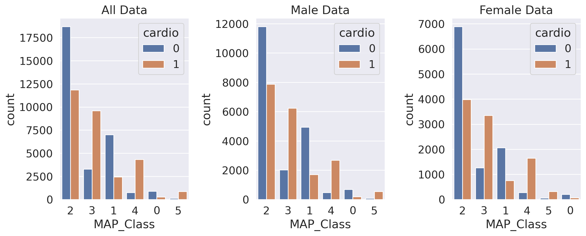
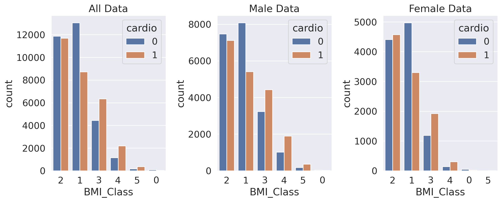

{kind=link}
import pandas as pd
import numpy as np
import matplotlib.pyplot as plt
import seaborn as sns
sns.set(style='darkgrid', font_scale=1.4)
from kmodes.kmodes import KModes
Contents:
Introduction to Clustering.
Different types of clustering.
Example of Clustering with Cardiovascular Disease dataset.
Data Visualization
Data processing
Model implementation
Clustering result visualization
Clustering
Clustering involves the task of grouping a population or data points into distinct clusters, where items within the same cluster share more similarities with each other compared to those in different clusters. Essentially, the goal is to identify and categorize groups with similar characteristics into clusters.
There are various types of clustering algorithms due to the subjective nature of clustering:
Connectivity models: These models rely on the premise that closer data points in the data space exhibit greater similarity. They can start by classifying each point into separate clusters and then merge them as distance decreases, or begin with one cluster and split it as distance increases. Hierarchical clustering is a prominent example of this model.
Centroid models: These iterative algorithms gauge similarity based on a point’s proximity to cluster centroids. K-Means clustering falls into this category, requiring the number of clusters to be specified beforehand, which demands prior knowledge of the dataset.
Distribution models: These models assess the probability that data points in a cluster belong to the same distribution, like Normal or Gaussian. The Expectation-maximization algorithm is an instance, but it tends to overfit the data.
Density Models: These algorithms explore data space for areas with varying densities of data points. They identify different density regions and group data points within these regions into the same cluster. DBSCAN and OPTICS are popular examples.
I’ll delve deeper into two widely used clustering algorithms: K Means and Hierarchical clustering.
1. KMeans Clustering:
K-Means clustering is an unsupervised technique used to group data without pre-existing labels for training. Instead, it relies on the inherent patterns within independent features to derive insights on unseen data.

2. Hierarchical Clustering
Hierarchical Clustering, also known as Hierarchical Cluster Analysis (HCA), is an unsupervised clustering method that organizes clusters with a clear top-to-bottom order.
This algorithm groups similar objects into clusters, resembling the hierarchical organization seen in file and folder structures on a hard disk. The primary goal is to create a set of distinct clusters, each cluster being unique from the others, while objects within each cluster share substantial similarities.
Hierarchical clustering is typically classified into two types:
Agglomerative Hierarchical Clustering

Divisive Hierarchical Clustering
3. Density Based(DBSCAN)

DBSCAN (Density-based spatial clustering of applications with noise) is an algorithm designed to identify clusters of varying shapes and sizes within a dataset, even in the presence of noise and outliers.
The algorithm relies on two key parameters:
minPts: This threshold determines the minimum number of points required to be clustered together for a region to be recognized as dense.
eps (ε): A distance measurement used to locate neighboring points around any given point.
After completing the DBSCAN clustering, three types of points emerge:
Core: These points have at least m neighboring points within a distance of n from themselves.
Border: Points classified as Border have at least one Core point within a distance of n.
Noise: These points neither qualify as Core nor Border points. They have fewer than m neighboring points within a distance of n from themselves.
4. Gaussian Mixture Model
Gaussian Mixture Models (GMMs) models assume multiple Gaussian distributions, each representing a cluster. GMMs use a soft clustering approach, probabilistically assigning data points to different clusters. The algorithm comprises two steps: the Expectation (E) step and the Maximization (M) step.
KModes Clustering using Cardio Data
import pandas as pd
import numpy as np
import matplotlib.pyplot as plt
import seaborn as sns
from sklearn.cluster import KMeans
from sklearn.metrics import silhouette_score
from sklearn.preprocessing import MinMaxScalerdf = pd.read_csv('/home/tpriya/CS5525/MLBlog/posts/post-with-code/cardio_train.csv', sep=";")
df| id | age | gender | height | weight | ap_hi | ap_lo | cholesterol | gluc | smoke | alco | active | cardio | |
|---|---|---|---|---|---|---|---|---|---|---|---|---|---|
| 0 | 0 | 18393 | 2 | 168 | 62.0 | 110 | 80 | 1 | 1 | 0 | 0 | 1 | 0 |
| 1 | 1 | 20228 | 1 | 156 | 85.0 | 140 | 90 | 3 | 1 | 0 | 0 | 1 | 1 |
| 2 | 2 | 18857 | 1 | 165 | 64.0 | 130 | 70 | 3 | 1 | 0 | 0 | 0 | 1 |
| 3 | 3 | 17623 | 2 | 169 | 82.0 | 150 | 100 | 1 | 1 | 0 | 0 | 1 | 1 |
| 4 | 4 | 17474 | 1 | 156 | 56.0 | 100 | 60 | 1 | 1 | 0 | 0 | 0 | 0 |
| ... | ... | ... | ... | ... | ... | ... | ... | ... | ... | ... | ... | ... | ... |
| 69995 | 99993 | 19240 | 2 | 168 | 76.0 | 120 | 80 | 1 | 1 | 1 | 0 | 1 | 0 |
| 69996 | 99995 | 22601 | 1 | 158 | 126.0 | 140 | 90 | 2 | 2 | 0 | 0 | 1 | 1 |
| 69997 | 99996 | 19066 | 2 | 183 | 105.0 | 180 | 90 | 3 | 1 | 0 | 1 | 0 | 1 |
| 69998 | 99998 | 22431 | 1 | 163 | 72.0 | 135 | 80 | 1 | 2 | 0 | 0 | 0 | 1 |
| 69999 | 99999 | 20540 | 1 | 170 | 72.0 | 120 | 80 | 2 | 1 | 0 | 0 | 1 | 0 |
70000 rows × 13 columns
#removing Outliers
# Let's remove weights and heights, that fall below 2.5% or above 97.5% of a given range.
df.drop(df[(df['height'] > df['height'].quantile(0.975)) | (df['height'] < df['height'].quantile(0.025))].index,inplace=True)
df.drop(df[(df['weight'] > df['weight'].quantile(0.975)) | (df['weight'] < df['weight'].quantile(0.025))].index,inplace=True)print("Diastilic pressure is higher than systolic one in {0} cases".format(df[df['ap_lo']> df['ap_hi']].shape[0]))
df.drop(df[(df['ap_hi'] > df['ap_hi'].quantile(0.975)) | (df['ap_hi'] < df['ap_hi'].quantile(0.025))].index,inplace=True)
df.drop(df[(df['ap_lo'] > df['ap_lo'].quantile(0.975)) | (df['ap_lo'] < df['ap_lo'].quantile(0.025))].index,inplace=True)Diastilic pressure is higher than systolic one in 1082 casesdf.describe()| id | age | gender | height | weight | ap_hi | ap_lo | cholesterol | gluc | smoke | alco | active | cardio | |
|---|---|---|---|---|---|---|---|---|---|---|---|---|---|
| count | 60142.000000 | 60142.000000 | 60142.000000 | 60142.000000 | 60142.000000 | 60142.000000 | 60142.000000 | 60142.000000 | 60142.000000 | 60142.000000 | 60142.000000 | 60142.000000 | 60142.000000 |
| mean | 49895.698065 | 19468.719979 | 1.347311 | 164.554854 | 73.426805 | 125.770526 | 81.046307 | 1.350953 | 1.220229 | 0.085631 | 0.051877 | 0.803648 | 0.488228 |
| std | 28840.467755 | 2460.510296 | 0.476120 | 6.830174 | 11.614806 | 13.761847 | 8.239157 | 0.670076 | 0.567607 | 0.279820 | 0.221781 | 0.397241 | 0.499866 |
| min | 0.000000 | 10798.000000 | 1.000000 | 150.000000 | 52.000000 | 100.000000 | 60.000000 | 1.000000 | 1.000000 | 0.000000 | 0.000000 | 0.000000 | 0.000000 |
| 25% | 24867.500000 | 17677.250000 | 1.000000 | 160.000000 | 65.000000 | 120.000000 | 80.000000 | 1.000000 | 1.000000 | 0.000000 | 0.000000 | 1.000000 | 0.000000 |
| 50% | 49902.500000 | 19705.000000 | 1.000000 | 165.000000 | 72.000000 | 120.000000 | 80.000000 | 1.000000 | 1.000000 | 0.000000 | 0.000000 | 1.000000 | 0.000000 |
| 75% | 74745.750000 | 21321.000000 | 2.000000 | 169.000000 | 80.000000 | 135.000000 | 90.000000 | 1.000000 | 1.000000 | 0.000000 | 0.000000 | 1.000000 | 1.000000 |
| max | 99999.000000 | 23713.000000 | 2.000000 | 180.000000 | 106.000000 | 163.000000 | 100.000000 | 3.000000 | 3.000000 | 1.000000 | 1.000000 | 1.000000 | 1.000000 |
# transforming the column AGE(measured in days) for Years
df['years'] = (df['age'] / 365).round().astype('int')
df.drop(['age'], axis='columns', inplace=True)
df.drop(['id'], axis='columns', inplace=True)
# age_bin in quinquenium 5 years spam
df['age_bin'] = pd.cut(df['years'], [0,20,30,35,40,45,50,55,60,65,70,75,80,85,90,95,100],
labels=['0-20', '20-30', '30-35', '35-40','40-45','45-50','50-55','55-60','60-65','65-70','70-75','75-80','80-85','85-90','90-95','95-100'])# Adding Body Mass Index
df['bmi'] = df['weight']/((df['height']/100)**2)# transforming the column bmi in Body Mass Index Classes (1 to 6)
rating = []
for row in df['bmi']:
if row < 18.5 : rating.append(1) #UnderWeight
elif row > 18.5 and row < 24.9: rating.append(2)#NormalWeight
elif row > 24.9 and row < 29.9: rating.append(3)#OverWeight
elif row > 29.9 and row < 34.9: rating.append(4)#ClassObesity_1
elif row > 34.9 and row < 39.9: rating.append(5)#ClassObesity_2
elif row > 39.9 and row < 49.9: rating.append(6)#ClassObesity_3
elif row > 49.9: rating.append('Error')
else: rating.append('Not_Rated')df['BMI_Class'] = rating
df["BMI_Class"].value_counts(normalize=True)BMI_Class
3 0.391773
2 0.361943
4 0.179209
5 0.055801
6 0.009162
1 0.002112
Name: proportion, dtype: float64Mean Arterial Pressure (MAP) = 2 Diastollic Blood Pressure + Sistolic Blood Pressure / 3
df['MAP'] = ((2* df['ap_lo']) + df['ap_hi']) / 3
#Creating Classes for MAP
map_values = []
for row in df['MAP']:
if row < 69.9: map_values.append(1) #Low
elif row > 70 and row < 79.9: map_values.append(2)#Normal
elif row > 79.9 and row < 89.9: map_values.append(3)#Normal
elif row > 89.9 and row < 99.9: map_values.append(4)#Normal
elif row > 99.9 and row < 109.9: map_values.append(5)#High
elif row > 109.9 and row < 119.9: map_values.append(6)#Normal
elif row > 119.9: map_values.append(7)
else: map_values.append('Not_Rated')
#inserting MAP_Class Column
df['MAP_Class'] = map_values# Reordering Columns
df= df[["gender","height","weight","bmi","ap_hi","ap_lo","MAP","years","age_bin","BMI_Class","MAP_Class","cholesterol","gluc","smoke","active","cardio"]]
df.head()| gender | height | weight | bmi | ap_hi | ap_lo | MAP | years | age_bin | BMI_Class | MAP_Class | cholesterol | gluc | smoke | active | cardio | |
|---|---|---|---|---|---|---|---|---|---|---|---|---|---|---|---|---|
| 0 | 2 | 168 | 62.0 | 21.967120 | 110 | 80 | 90.000000 | 50 | 45-50 | 2 | 4 | 1 | 1 | 0 | 1 | 0 |
| 1 | 1 | 156 | 85.0 | 34.927679 | 140 | 90 | 106.666667 | 55 | 50-55 | 5 | 5 | 3 | 1 | 0 | 1 | 1 |
| 2 | 1 | 165 | 64.0 | 23.507805 | 130 | 70 | 90.000000 | 52 | 50-55 | 2 | 4 | 3 | 1 | 0 | 0 | 1 |
| 3 | 2 | 169 | 82.0 | 28.710479 | 150 | 100 | 116.666667 | 48 | 45-50 | 3 | 6 | 1 | 1 | 0 | 1 | 1 |
| 4 | 1 | 156 | 56.0 | 23.011177 | 100 | 60 | 73.333333 | 48 | 45-50 | 2 | 2 | 1 | 1 | 0 | 0 | 0 |
Data Analize and Preparation
df_cat = df[["gender","age_bin","BMI_Class","MAP_Class","cholesterol","gluc","smoke","active","cardio",]]from sklearn import preprocessing
le = preprocessing.LabelEncoder()
df_cat = df_cat.apply(le.fit_transform)
df_cat.head()| gender | age_bin | BMI_Class | MAP_Class | cholesterol | gluc | smoke | active | cardio | |
|---|---|---|---|---|---|---|---|---|---|
| 0 | 1 | 3 | 1 | 2 | 0 | 0 | 0 | 1 | 0 |
| 1 | 0 | 4 | 4 | 3 | 2 | 0 | 0 | 1 | 1 |
| 2 | 0 | 4 | 1 | 2 | 2 | 0 | 0 | 0 | 1 |
| 3 | 1 | 3 | 2 | 4 | 0 | 0 | 0 | 1 | 1 |
| 4 | 0 | 3 | 1 | 0 | 0 | 0 | 0 | 0 | 0 |
df_male = df_cat.query("gender == 0")
df_female = df_cat.query("gender == 1")
df_male.head()| gender | age_bin | BMI_Class | MAP_Class | cholesterol | gluc | smoke | active | cardio | |
|---|---|---|---|---|---|---|---|---|---|
| 1 | 0 | 4 | 4 | 3 | 2 | 0 | 0 | 1 | 1 |
| 2 | 0 | 4 | 1 | 2 | 2 | 0 | 0 | 0 | 1 |
| 4 | 0 | 3 | 1 | 0 | 0 | 0 | 0 | 0 | 0 |
| 5 | 0 | 5 | 2 | 2 | 1 | 1 | 0 | 0 | 0 |
| 6 | 0 | 6 | 4 | 2 | 2 | 0 | 0 | 1 | 0 |
f, axs = plt.subplots(1,3,figsize = (12,5))
sns.countplot(x=df_cat['MAP_Class'],order=df_cat['MAP_Class'].value_counts().index,hue=df_cat['cardio'],ax=axs[0])
sns.countplot(x=df_male['MAP_Class'],order=df_male['MAP_Class'].value_counts().index,hue=df_male['cardio'],ax=axs[1])
sns.countplot(x=df_female['MAP_Class'],order=df_female['MAP_Class'].value_counts().index,hue=df_female['cardio'],ax=axs[2])
axs[0].set_title('All Data')
axs[1].set_title('Male Data')
axs[2].set_title('Female Data')
plt.tight_layout()
plt.show()
All the values are similar
f, axs = plt.subplots(1,3,figsize = (12,5))
sns.countplot(x=df_cat['BMI_Class'],order=df_cat['BMI_Class'].value_counts().index,hue=df_cat['cardio'],ax=axs[0])
sns.countplot(x=df_male['BMI_Class'],order=df_male['BMI_Class'].value_counts().index,hue=df_male['cardio'],ax=axs[1])
sns.countplot(x=df_female['BMI_Class'],order=df_female['BMI_Class'].value_counts().index,hue=df_female['cardio'],ax=axs[2])
axs[0].set_title('All Data')
axs[1].set_title('Male Data')
axs[2].set_title('Female Data')
plt.tight_layout()
plt.show()
The BMI classes across all data, as well as for males and females, are quite similar. However, there’s a slight variance in the BMI_Class = 2 specifically for the female dataset.
f, axs = plt.subplots(1,3,figsize = (12,5))
sns.countplot(x=df_cat['gluc'],order=df_cat['gluc'].value_counts().index,hue=df_cat['cardio'],ax=axs[0])
sns.countplot(x=df_male['gluc'],order=df_male['gluc'].value_counts().index,hue=df_male['cardio'],ax=axs[1])
sns.countplot(x=df_female['gluc'],order=df_female['gluc'].value_counts().index,hue=df_female['cardio'],ax=axs[2])
axs[0].set_title('All Data')
axs[1].set_title('Male Data')
axs[2].set_title('Female Data')
plt.tight_layout()
plt.show()All the values are similar
f, axs = plt.subplots(1,3,figsize = (12,5))
sns.countplot(x=df_cat['cholesterol'],order=df_cat['cholesterol'].value_counts().index,hue=df_cat['cardio'],ax=axs[0])
sns.countplot(x=df_male['cholesterol'],order=df_male['cholesterol'].value_counts().index,hue=df_male['cardio'],ax=axs[1])
sns.countplot(x=df_female['cholesterol'],order=df_female['cholesterol'].value_counts().index,hue=df_female['cardio'],ax=axs[2])
axs[0].set_title('All Data')
axs[1].set_title('Male Data')
axs[2].set_title('Female Data')
plt.tight_layout()
plt.show()All the values are similar
KModes Clustering Analysis
# new df to work
df_male = df_cat.query("gender == 0")
df_female = df_cat.query("gender == 1")# Elbow curve to find optimal K in Huang init
cost = []
K = range(1,6)
for num_clusters in list(K):
kmode = KModes(n_clusters=num_clusters, init = "Huang", n_init = 5, verbose=0)
kmode.fit_predict(df_cat)
cost.append(kmode.cost_)
plt.plot(K, cost, 'bx-')
plt.xlabel('No. of clusters')
plt.ylabel('Cost')
plt.title('Elbow Method For Optimal k')
plt.show()# female data
# Building the model with using K-Mode with "Huang" initialization
km_huang = KModes(n_clusters=2, init = "Huang", n_init = 5, verbose=0)
clusters_huang_1 = km_huang.fit_predict(df_female)
clusters_huang_1array([1, 0, 0, ..., 0, 1, 1], dtype=uint16)# male data
# Building the model with using K-Mode with "Huang" initialization
km_huang = KModes(n_clusters=2, init = "Huang", n_init = 5, verbose=0)
clusters_huang_2 = km_huang.fit_predict(df_male)
clusters_huang_2array([0, 1, 1, ..., 0, 0, 0], dtype=uint16)df_female.insert(0,"Cluster", clusters_huang_1, True)
# female DataFrame with Clusters
df_female.head()| Cluster | gender | age_bin | BMI_Class | MAP_Class | cholesterol | gluc | smoke | active | cardio | |
|---|---|---|---|---|---|---|---|---|---|---|
| 0 | 1 | 1 | 3 | 1 | 2 | 0 | 0 | 0 | 1 | 0 |
| 3 | 0 | 1 | 3 | 2 | 4 | 0 | 0 | 0 | 1 | 1 |
| 7 | 0 | 1 | 6 | 3 | 3 | 2 | 2 | 0 | 1 | 1 |
| 11 | 1 | 1 | 4 | 1 | 2 | 0 | 0 | 0 | 1 | 0 |
| 12 | 1 | 1 | 2 | 1 | 2 | 0 | 0 | 0 | 0 | 0 |
df_male.insert(0, "Cluster", clusters_huang_2, True)
# female DataFrame with Clusters
df_male.head()| Cluster | gender | age_bin | BMI_Class | MAP_Class | cholesterol | gluc | smoke | active | cardio | |
|---|---|---|---|---|---|---|---|---|---|---|
| 1 | 0 | 0 | 4 | 4 | 3 | 2 | 0 | 0 | 1 | 1 |
| 2 | 1 | 0 | 4 | 1 | 2 | 2 | 0 | 0 | 0 | 1 |
| 4 | 1 | 0 | 3 | 1 | 0 | 0 | 0 | 0 | 0 | 0 |
| 5 | 0 | 0 | 5 | 2 | 2 | 1 | 1 | 0 | 0 | 0 |
| 6 | 1 | 0 | 6 | 4 | 2 | 2 | 0 | 0 | 1 | 0 |
# replacing cluster column values to merge dataframes after
df_male["Cluster"].replace({0:2, 1:3}, inplace=True)
df_male.head()/tmp/ipykernel_23416/1028254110.py:2: SettingWithCopyWarning:
A value is trying to be set on a copy of a slice from a DataFrame
See the caveats in the documentation: https://pandas.pydata.org/pandas-docs/stable/user_guide/indexing.html#returning-a-view-versus-a-copy
df_male["Cluster"].replace({0:2, 1:3}, inplace=True)| Cluster | gender | age_bin | BMI_Class | MAP_Class | cholesterol | gluc | smoke | active | cardio | |
|---|---|---|---|---|---|---|---|---|---|---|
| 1 | 2 | 0 | 4 | 4 | 3 | 2 | 0 | 0 | 1 | 1 |
| 2 | 3 | 0 | 4 | 1 | 2 | 2 | 0 | 0 | 0 | 1 |
| 4 | 3 | 0 | 3 | 1 | 0 | 0 | 0 | 0 | 0 | 0 |
| 5 | 2 | 0 | 5 | 2 | 2 | 1 | 1 | 0 | 0 | 0 |
| 6 | 3 | 0 | 6 | 4 | 2 | 2 | 0 | 0 | 1 | 0 |
# female
f, axs = plt.subplots(1,3,figsize = (12,5))
sns.countplot(x=df_female['Cluster'],order=df_female['Cluster'].value_counts().index,hue=df_female['cardio'],ax=axs[0],palette='rainbow')
sns.countplot(x=df_female['smoke'],order=df_female['smoke'].value_counts().index,hue=df_female['cardio'],ax=axs[1],palette='rainbow')
sns.countplot(x=df_female['BMI_Class'],order=df_female['BMI_Class'].value_counts().index,hue=df_female['cardio'],ax=axs[2],palette='rainbow')
plt.tight_layout()
plt.show()# male
f, axs = plt.subplots(1,3,figsize = (12,5))
sns.countplot(x=df_male['Cluster'],order=df_male['Cluster'].value_counts().index,hue=df_male['cardio'],ax=axs[0],palette='rainbow')
sns.countplot(x=df_male['smoke'],order=df_male['smoke'].value_counts().index,hue=df_male['cardio'],ax=axs[1],palette='rainbow')
sns.countplot(x=df_male['BMI_Class'],order=df_male['BMI_Class'].value_counts().index,hue=df_male['cardio'],ax=axs[2],palette='rainbow')
plt.tight_layout()
plt.show()